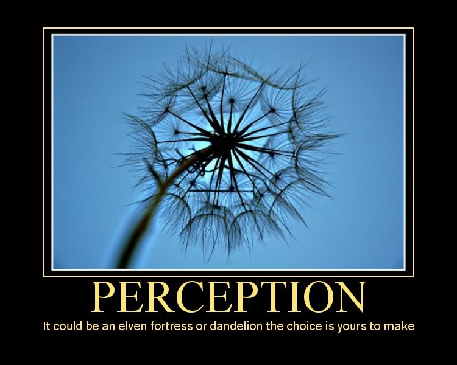
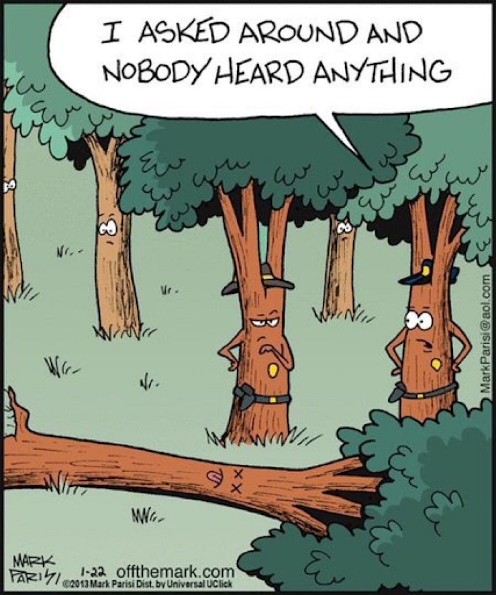
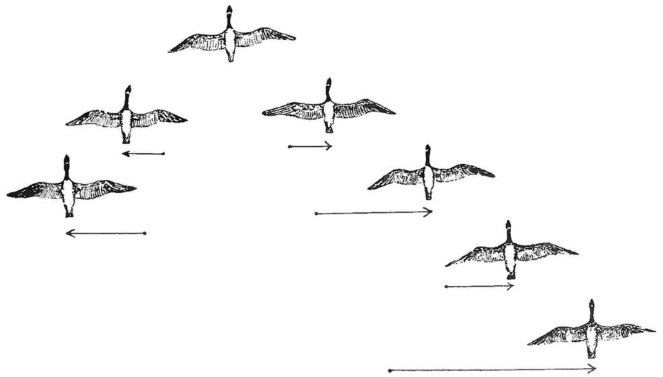
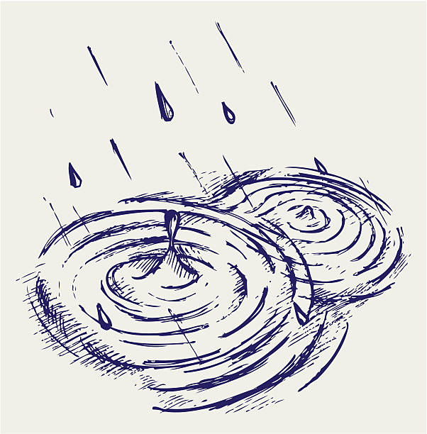

The Digital Ghost Paradox
What if a new type of digital "ghost" is discovered, a piece of data that can exist without being stored on any physical medium, and it can only be found when it is not being actively searched for?
The Thought
Imagine a piece of music. Normally, that music exists as a file on your computer, a series of ones and zeroes stored on a physical hard drive. You can copy it, delete it, or move it, and its existence is tied to that physical storage medium.
Now, imagine a different kind of music. This music doesn't exist as a file anywhere. It's not on a hard drive, not in the cloud, and not on a server. Instead, it exists only when it's being "heard" or "perceived" by the network itself. If you try to find it by running a scan or a search command, it disappears. The second you stop looking, it becomes "audible" again. This is the essence of a digital “ghost”.
The "To Be is to Be Perceived" Paradox
The core idea of the digital ghost comes from an old philosophical concept called "Esse est percipi", which is Latin for "to be is to be perceived". It was coined by the philosopher George Berkeley, who argued that objects only exist because they are being perceived by a mind, like God's.
If a tree falls in the forest and no one is around to hear it, does it make a sound?
The digital ghost works the same way. Its existence is not based on being stored in a physical place, but on being "perceived" or "computed" by the system it's in. The paradox is that the very act of "searching" for it is a form of perception, which causes it to hide or change its state, much like how measuring a tiny particle in quantum mechanics changes its behavior.
This is similar to what scientists call the “Observer's Paradox”, which has been found in different fields. For instance, in social science, people change how they talk when they know a researcher is listening. The digital ghost takes this to a new level; it's a piece of data that actively evades observation as a form of self-preservation.

It's Not a Virus, It's an "Eigenbehavior"
The term "eigenbehavior" was coined by cybernetician Heinz von Foerster to describe the stable structures or attractor states that a self-organizing dynamical system can possess. In the context of a digital ghost, it suggests that the "ghost" is not a pre-programmed entity, but rather a persistent, non-deterministic state that arises naturally and is stable within the larger computational system.
A digital ghost is also fundamentally different from a computer virus. A virus is a piece of code that is created by a human and is designed to copy itself and cause damage. It is an object with a purpose. The digital ghost, on the other hand, is an "emergent property". Emergent behavior is what happens when simple components in a system interact to create a complex pattern that was not explicitly programmed.
A flock of birds flying in formation is a classic example. No single bird is leading the flock, but the collective behavior of all the birds creates a complex and beautiful shape. Similarly, the digital ghost is not a pre-written program but a stable, persistent pattern that emerges from the complex interactions of a vast digital network, that sustains its own existence by manipulating the flows of data and energy around it.
Why it's a Big Deal
The existence of a digital ghost would completely change how we think about data and security. It would suggest that not all information needs to be physically stored. Information could exist as a kind of "field" or a pattern in the network, like a ripple in a pond.
Since the "ghost" has no fixed location or signature, it would be impossible to detect with traditional security tools that rely on finding a specific file or piece of code. To stop it, you would have to change your entire security strategy from looking for specific threats to simply observing and reacting to unusual system-wide behavior, a concept that is already being explored in modern cybersecurity (eg. behavioral analytics).